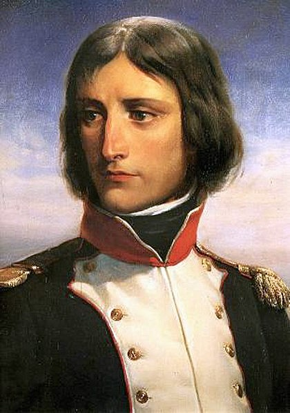

| Inicio |
Lugares turisticos |
Historia |
Cultura |
| Cultura de Francia |
| Categoria |
Descripción |
| Idioma y Religión |
El francés es el idioma oficial. La mayoría es católica, con presencia musulmana y protestante.
|  |
| Gastronomía |
Destacan el croissant, la baguette, quesos como brie y el vino, especialmente de Burdeos y Champagne.
| |
-
| Arte y Literatura |
Francia ha sido hogar de artistas como Monet y escritores como Victor Hugo. El Museo del Louvre es clave.
|  |
| Fiestas |
El Día de la Bastilla (14 de julio) es la principal fiesta nacional.
| _square_1-1_xl.jpg) |
| Moda |
París es la capital mundial de la moda, famosa por diseñadores como Coco Chanel y Christian Dior.
| |
| Deportes |
El fútbol y el rugby son muy populares. El Tour de Francia es una de las competencias de ciclismo más importantes.
| |
| Historia y Cultura |
Francia tiene una rica historia monárquica y es famosa por la Revolución Francesa y figuras como Napoleón.
|  |
| Todos los derechos reservados 2025 |